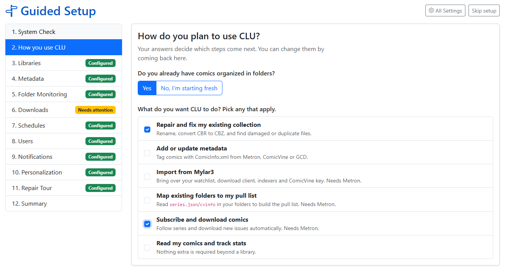
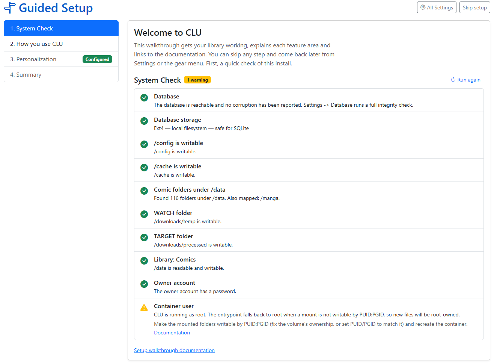
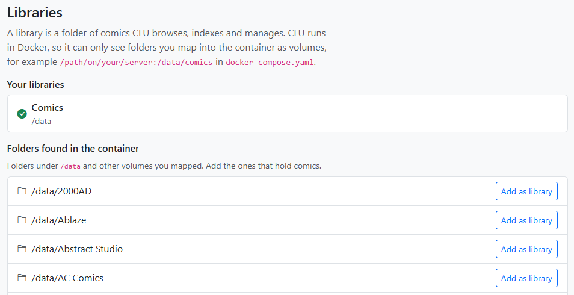
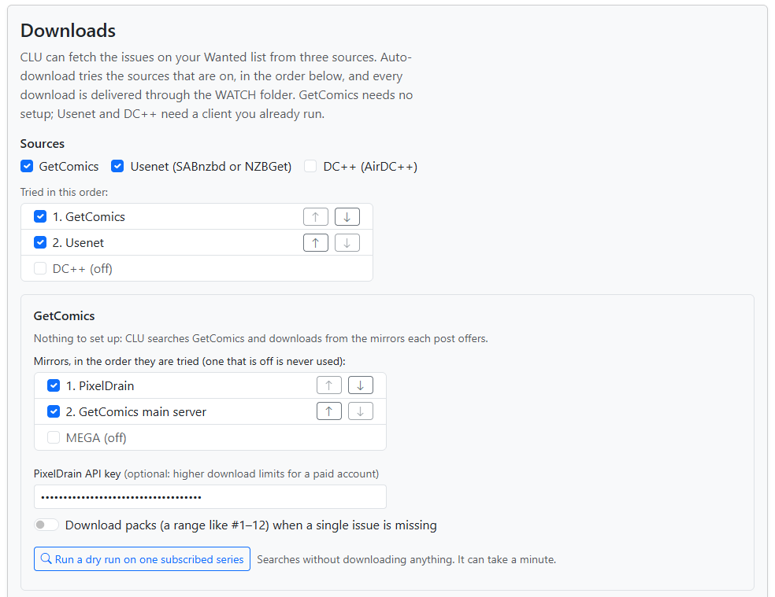

Guided Setup
Guided Setup helps you go from a clean install to a working library in a few minutes.
It checks your default settings, asks what you want to do with CLU, and then shows only the settings based on what you need.
On an existing install, it works as a health check: what is configured, what is broken, and highlights what's not being used.
Guided Setup doesn't replace Settings. A change in one, shows up in the other. Each step also links to the matching Settings tab for the options the walkthrough doesn't cover.

When it opens
| Install | What happens |
|---|---|
| New install | The Store Owner's (Admin) first visit to the home page opens Guided Setup. This happens once: after that, the home page opens normally. |
| Upgraded install | Nothing is redirected. Instead, the Store Owner (Admin) sees a one-time banner: "New: Guided Setup can check your configuration and point out anything missing." with Run Guided Setup and Dismiss. Opening Guided Setup or dismissing the banner removes it for good. |
Users are never redirected and never see the banner.
Running it again
You can re-run Guided Setup at any time from either of these:
- The Run Guided Setup button above the tabs on the Settings page.
- gear menu → Guided Setup, between Settings and Schedules.
Step 1: System Check
The first step is a read-only check of the install. Each row is an OK, a warning or a failure, or is skipped when it can't run on your platform. A row that isn't OK shows how to fix it and links to more details.
Only the Database check blocks you. If it fails, Next stays disabled until it's fixed. Everything else is a warning you can come back to. Run again repeats the check after you've changed something.

| Check | What it means | How to fix a warning |
|---|---|---|
| Database | CLU can open its database, and no corruption has been reported. | If it can't be opened, check that /config is mounted and writable, then restart the container. The container log shows the underlying error. If corruption was reported, open Settings → Database to run a full check and repair or restore it. See Database. |
| Database storage | The filesystem holding /config is safe for a database. A network share (CIFS/NFS) or the container's own temporary layer is not. |
Mount /config on local storage or a Docker named volume. See Volumes and permissions. |
| /config is writable /cache is writable |
CLU can create and delete a file in each. /config holds the database, its backups and the logs; /cache holds thumbnails and the trash. |
Map a volume onto that path that the container user (PUID:PGID) can write to. |
| Comic folders under /data | A comics volume is mapped. CLU lists the folders it finds under /data; the Libraries step uses that list. |
Map your comics folder into the container under /data in docker-compose.yaml (for example /mnt/comics:/data/comics), then recreate the container. An empty /data is fine if your libraries are mapped somewhere else, such as /comics. |
| WATCH folder TARGET folder |
The Folder Monitoring folders are outside /data and writable. Unset, they default to /downloads/temp and /downloads/processed. |
Set them in Settings → File Processing to folders mapped into the container outside /data. The container user must be able to write to them. |
| Libraries | Shown only when no library exists yet. | Add one in the next steps, or in Settings → Libraries. |
| Library: name | One row per enabled library: the path exists, is a folder, and can be read and written. | A missing path usually means the volume mapping changed: check docker-compose.yaml, or edit the library's path. A read-only library still works, but renaming, metadata writes and conversion will fail. Give the container user write access, or set PUID/PGID to the folder's owner. |
| Owner account | The owner account exists and, if login is required, has a password. A single-user, login-free install is OK as it is. | If login is required and the owner has no password, set one in the Users step or on the Users page. |
| Container user | CLU runs as your PUID, not as root, and your library folders are owned by the same user. |
Make the mounted folders writable by PUID:PGID (fix the volume's ownership, or set PUID/PGID to match it) and recreate the container. |
Info
Every check gives up after 5 seconds, so one hung mount can't stall the page. That warning almost always means a network mount (CIFS/NFS) has stopped responding. Check the share on the host, then Run again.
Volumes and permissions
Most warnings come down to the volume mapping in your docker-compose.yaml. Guided Setup can't change it, because it runs inside the container, but it can tell you what's wrong:
- Paths are container paths. CLU only sees what you map. A folder on your NAS has to be mapped to a path under
/data(or another mapped volume) before you can add it as a library. PUID/PGIDmust match the owner of your folders. When a mount isn't writable byPUID:PGID, the container falls back to running as root, and every file it writes is then root-owned.- Recreate, don't just restart. A changed volume or environment variable needs
docker compose up -d, not just a restart.
See Config Installation and the Quickstart for the full docker-compose.yaml.
Database
The System Check runs a quick check that the database opens, and reports any corruption CLU has already recorded. Settings → Database runs the full integrity check, and is where you repair or restore. See Database and Database Recovery.
Step 2: How do you plan to use CLU?
Your answers decide which steps come next. You can change them by coming back to this step.
Do you already have comics organized in folders?
- No, I'm starting fresh: you go through every section in order, and each one can be skipped. The two sections that need an existing collection, Mylar3 Import and Pull List Scan, are left out.
- Yes: pick any of the use cases below. You get each section the use cases need, once, however many of them ask for it.
| Use case | What it's for | Sections it adds |
|---|---|---|
| Repair and fix my existing collection | Rename, convert CBR to CBZ, and find damaged or duplicate files. | Libraries, Folder Monitoring, Notifications, Library Health |
| Add or update metadata | Tag comics with ComicInfo.xml from Metron, ComicVine or GCD. |
Libraries, Metadata |
| Import from Mylar3 | Bring over your watchlist, download client, indexers and ComicVine key. | Libraries, Metadata, Mylar3 Import, Downloads |
| Map existing folders to my pull list | Read series.json/cvinfo in your folders to build the Pull List. |
Libraries, Metadata, Pull List Scan |
| Subscribe and download comics | Follow series and download new issues automatically. | Libraries, Metadata, Folder Monitoring, Downloads, Schedules, Users, Notifications |
| Read my comics and track stats | Nothing extra is needed beyond a library. | Libraries, Users |
Personalization is part of every path.
Metron is required for three of these
Importing from Mylar3, mapping folders to the Pull List, and subscribing to series all need a Metron account. The Pull List, Wanted and subscriptions are built on Metron's release data. ComicVine is optional.
The steps
Sections always run in this order, and each one appears only if your indicated usage includes it:
Libraries → Metadata → Mylar3 Import → Pull List Scan → Folder Monitoring → Downloads → Schedules → Users → Notifications → Personalization → Library Health → Summary
The Set Up CLU tab of this documentation follows the same order, and the Library Health's pages are under Maintenance.
Every step has the same basic layout:
- Definition of the section
- Important Fields
- Save (and Test where it applies)
- Link to the full Settings tab
- Link to the docs
Each step saves as you go, so there's no "save everything" at the end.
Libraries
A library is a folder CLU indexes and shows in the collection. The step lists the folders the System Check found under /data, each with a one-click Add as library, and has a folder picker for anywhere else you've mapped.

Generally you would add your root folder and CLU will traverse the directories.
Adding a library starts the file index, and the step shows its progress.
More in Libraries.
Metadata
Set up the the CLU supported metadata providers.
Metron is required for the Pull List; ComicVine and GCD are optional - but recommended. You can test credentials before you save them. This step can also download the ComicVine local database for you, and sets the ComicInfo.xml write options.
More in Metadata Providers and Local Metadata Databases.
Mylar3 Import
Checks that you have a library and Metron set up, then opens the Mylar3 importer. The importer's Back to Guided Setup button returns you to this step, which shows the result of your last import. You must upload your existing mylar.db file and config.ini.
Pull List Scan
Runs Scan Library from inside the walkthrough. It reads the series.json and cvinfo files in your folders and maps each series to the Pull List. Folders that need a decision open in the Pull List page's review window, where you confirm them. This is less accurate than the Mylar3 import, but if you don't have the database and config files, it's a good place to start.
Folder Monitoring
Sets the WATCH and TARGET folders with the folder picker, then turns monitoring on. Here too: auto-convert, auto-rename with a live preview of your rename pattern, and the trash.
WATCH is where you drop files and folders to be processed. Files are also downloaded here from DDL, Usenet and DC++. This should be outside of your library. All files dropped here will have filenames cleaned and will be coverted to CBZ files. They are then moved to the TARGET folder.
TARGET is where CLU moves processed files. This is a TEMP directory that holds all files until they are matched & moved via the automated process or you manually move them via File Manager
More in Monitoring Setup and File Processing Settings.
Downloads
Choose which sources CLU downloads from: DDL (Direct Downloads), Usenet and DC++. A source is used only while it's ticked, and the ticked ones are tried in the order shown. You can reorder them and enable/disable as needed.
- DDL works out of the box and requires no configuration. Adding a PixelDrain API key is optional and allows faster downloads of large files.
- Usenet needs a SABnzbd or NZBGet client and at least one Newznab indexer.
- DC++ needs an AirDC++ client.
For clients and indexers, Save is enabled only after a passing Test of what's on screen.

More in Download & API Settings, Adding a Download Client, Adding Newznab Indexers, Adding AirDC++ and Source Priority.
Schedules
Pick your timezone and set the recurring jobs: the file index rebuild, series sync, GetComics auto-download and reading-list sync. Use recommended defaults turns the rebuild and sync on daily at off-peak times. Times are shown in your timezone.
More in Schedules.
Users
Will anyone else use this CLU?
- No: CLU stays login-free. That's fine for one person on a private network.
- Yes: set the owner's username and password, then optionally add a second account. Adding that account is what turns login on.
More in Users & Access.
Notifications
Add Apprise URLs and choose which events notify you. Test works before you save.
See the Appriseit.com Services list for the URL format of each service. Lines starting with # are ignored.
More in Notifications.
Personalization
Pick the site theme, with previews.
More in Personalization.
Library Health
Turn on the library health scan, set how often it runs, and run one now. The step then shows what the scan found, with links to where you fix things:
- Problem Files: damaged archives, failed conversions, orphans and empty folders.
- Duplicates: exact and likely duplicate copies.
- Source Wall: edit
ComicInfo.xmlacross a folder, and see which provider tagged each file.
Skipping and resuming
| Button | What it does |
|---|---|
| Skip this step | Marks the step Skipped and moves on. You can come back to it from the progress rail or the Summary. |
| Skip setup | Leaves Guided Setup and goes to the home page. You won't be redirected again; run it from Settings or the gear menu when you want. |
| All Settings | Opens the full Settings page. |
Your place is saved on every Next and Skip. If you leave midway, reopening Guided Setup picks up at the step you were on.
The Summary
The last step shows one row per section:
| Status | Meaning |
|---|---|
| Configured | The section is set up and working. |
| Needs attention | Something is set up but broken, or incomplete. The row says what. |
| Not set up | Nothing is configured yet. |
| Skipped | You skipped the step and it still isn't configured. |
| Configure in Settings | The section has no step in the walkthrough. |
Each row has Open step, which takes you back to it (adding it to your path if it wasn't there), and Settings or Open page for the full options. Under the table, the System Check runs again.
- Finish marks Guided Setup complete and goes to the home page.
- Download summary (for support) saves
clu-setup-summary.json: your path, skipped steps, section statuses and the System Check results. Attach it when you ask for help on Discord or GitHub.